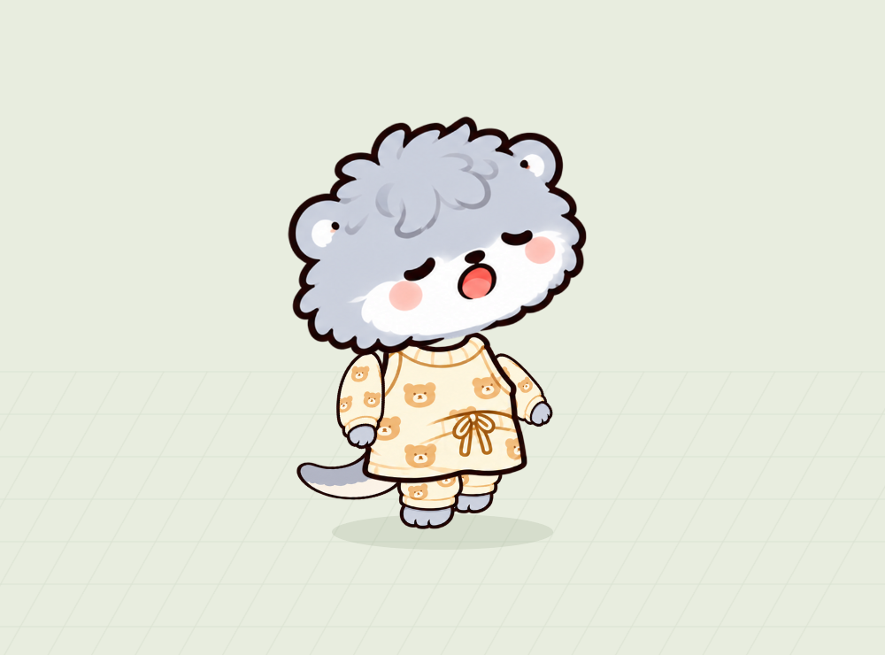

<!doctype html><html lang="ko"><meta charset="utf-8"><meta name="viewport" content="width=device-width,initial-scale=1"><title>해달 41–50 리깅</title><style>body{margin:0;background:#edf3e8;color:#293d31;font:16px system-ui}main{max-width:1250px;margin:50px auto;padding:20px}h1{font-size:32px}p{color:#607263}section{display:grid;grid-template-columns:repeat(auto-fit,minmax(210px,1fr));gap:16px}a{color:inherit;text-decoration:none;background:#fff;border-radius:20px;overflow:hidden;box-shadow:0 4px 16px #21342110}a:hover{outline:3px solid #78a983}img{width:100%;aspect-ratio:1.25;object-fit:cover}strong{display:block;padding:16px;font-size:18px}small{display:block;padding:0 16px 20px;color:#738174}</style><main><h1>해달 친구들 · 41–50</h1><p>각 캐릭터를 눌러 네 방향 걷기와 팔·다리 위치, 머리·몸통 크기를 조절하세요.</p><section><a href="../ShyRig/V1/preview.html"><strong>41 · 수줍은 해달</strong><small>걷기 미리보기 열기 →</small></a><a href="../PlayfulRig/V1/preview.html"><strong>42 · 장난꾸러기 해달</strong><small>걷기 미리보기 열기 →</small></a><a href="../LaidbackRig/V1/preview.html"><strong>43 · 느긋한 해달</strong><small>걷기 미리보기 열기 →</small></a><a href="../NeatRig/V1/preview.html"><strong>44 · 단정한 해달</strong><small>걷기 미리보기 열기 →</small></a><a href="../FluffyRig/V1/preview.html"><strong>45 · 복슬복슬 해달</strong><small>걷기 미리보기 열기 →</small></a><a href="../FashionRig/V1/preview.html"><strong>46 · 꾸미는 해달</strong><small>걷기 미리보기 열기 →</small></a><a href="../SleepyRig/V1/preview.html"><strong>47 · 잠꾸러기 해달</strong><small>걷기 미리보기 열기 →</small></a><a href="../WalkerRig/V1/preview.html"><strong>48 · 산책하는 해달</strong><small>걷기 미리보기 열기 →</small></a><a href="../QuietRig/V1/preview.html"><strong>49 · 조용한 해달</strong><small>걷기 미리보기 열기 →</small></a><a href="../LivelyRig/V1/preview.html"><strong>50 · 활발한 해달</strong><small>걷기 미리보기 열기 →</small></a></section></main></html>